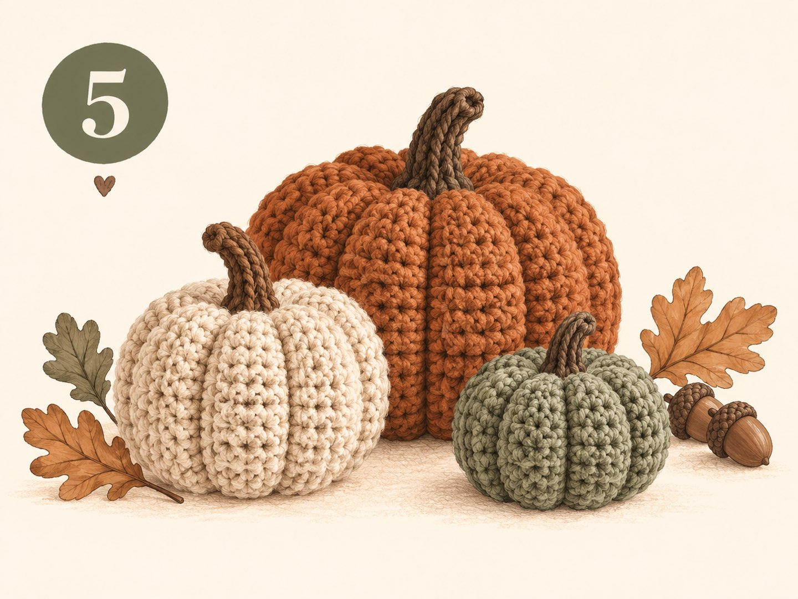

Ribbed pumpkins made from a single rectangle – no rounds and no increases. Done in one evening, in three sizes for your fall decor.

The secret of these pumpkins: you don't crochet a ball, but a flat rectangle of single crochet worked in the back loop only. This creates the typical ribs all by itself. You close the rectangle into a tube, gather both ends, stuff it – and cinch the pumpkin segments with a piece of yarn.
Because you only work in rows and never have to count increases or decreases, this is the perfect first project after learning the basic stitches. If “single crochet” or “back loop only” don't mean anything to you yet, take a quick look at the Crochet Basics first. This pattern uses US crochet terms.
| ch | Chain |
| sc | Single crochet |
| BLO | Back loop only |
| sl st | Slip stitch |
| MR | Magic ring |
| R | Row / round |
| (x sts) | Stitch count at the end of the row |
| Size | Foundation | Stitches per row | Rows |
| Small (approx. 8 cm) | ch 16 | 15 sc | 30 |
| Medium (approx. 11 cm) | ch 21 | 20 sc | 40 |
| Large (approx. 15 cm) | ch 31 | 30 sc | 56 |
The pattern below always gives the numbers in the order small / medium / large. The final size depends on your yarn and tension – the centimeters are a guide.
The turning chain doesn't count as a stitch – work the first sc of each row into the first stitch. Count every now and then: if the stitch count stays the same, your ribs will be nice and straight.
The ribs now run from top to bottom – just like on a real pumpkin.
Place the yarn in one of the rib grooves each time – that way it disappears almost invisibly into the fabric.
Place the unstuffed stem in the center of the top indent and sew it on all the way around with the tail.
A little vine or a leaf next to the stem makes your pumpkin even prettier. You'll find the matching patterns on the Flowers & Leaves page: the corkscrew vine (with approx. ch 15) and the leaf with stem. Simply sew both on next to the stem.
A pumpkin that's stuffed too firmly is hard to cinch. Use a little less stuffing – the indents will be deeper and prettier.
Three pumpkins in different sizes and colors – for example orange, cream and sage green – look much lovelier together than a single one.
The same pattern works with chenille yarn. Use the hook size on the yarn label and a few rows less, as the yarn is thicker.